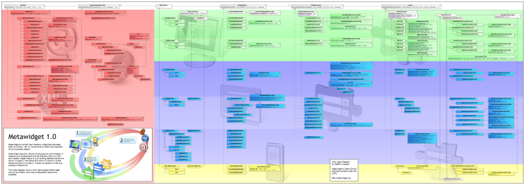

<%@ page language="java" %>
<%@ taglib tagdir="/WEB-INF/tags" prefix="tags"%>

<tags:page title="Getting Started">

	<tags:body>

		<center id="quick-start">
			<tags:quickstart />
		</center>

		<h2>Wallchart</h2>
		
		<p>
			The Metawidget wallchart is a large UML class diagram showing which technologies Metawidget
			can mix and match, and what configuration options are available. The wallchart includes all supported
			back-end technologies (shown in red), desktop frameworks (shown in green), web frameworks
			(shown in blue) and mobile frameworks (shown in yellow). 
		</p>
		
		<p>
			It's a great tool for both familiarising yourself with the overall architecture
			of Metawidget, and for exploring what plugins are available. It is downloadable as a
			PNG image designed to be printed across two pieces of landscape A3 or A4 paper. 
		</p>
		
		<p>
			Download the wallchart <a href="media/wallchart/wallchart.png">here</a>.
		</p>

		<p style="text-align: center; margin-top: 20px">		
			<a href="media/wallchart/wallchart.png">
				
			</a>
		</p>
	
	</tags:body>	
	
</tags:page>
